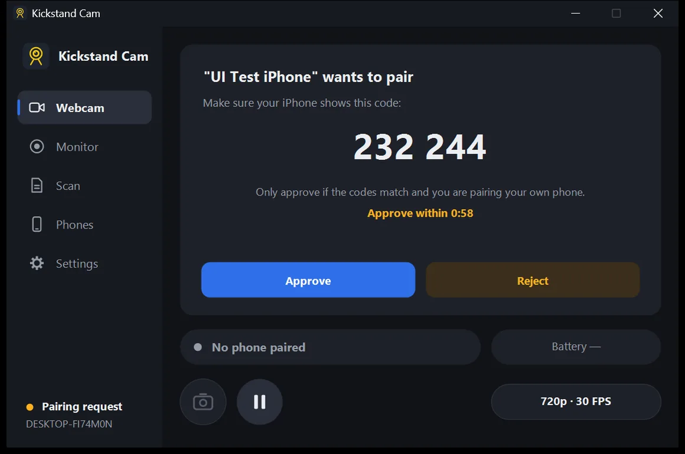
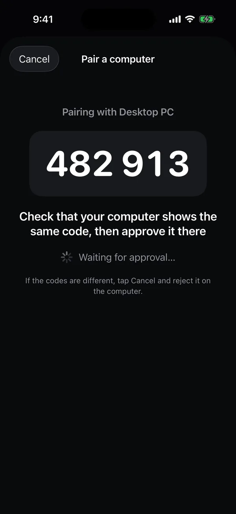

Set up Kickstand Cam
Install the app on your computer, pair your iPhone once, and from then on just open Kickstand Cam on the phone.
1. Install the computer app
Windows 11
- Download the Windows installer and run it. It asks for administrator permission once, because it registers the Kickstand Cam camera for every app on the PC.
- The installer adds a Windows Firewall rule for Kickstand Cam on private networks, so the phone can reach the PC over Wi-Fi. If your Wi-Fi is set to Public in Windows, switch it to Private.
- Kickstand Cam lives in the system tray. Click its icon to open the window.
Mac (macOS 13 or later)
- Download the DMG, open it, and drag Kickstand Cam into your Applications folder. The camera only works when the app is in Applications.
- Open Kickstand Cam from Applications. It runs in the menu bar.
2. Mac: allow the camera extension
On a Mac, Kickstand Cam adds its camera through a camera extension, and macOS asks you to allow it once.
- When Kickstand Cam asks, click Open System Settings.
- On macOS 15 and later, go to System Settings › General › Login Items & Extensions › Camera Extensions, switch on Kickstand Cam, and enter your password.
- On macOS 13 and 14, go to System Settings › Privacy & Security, find the message that system software was blocked, and click Allow.
Using the macOS firewall? If the firewall is on, allow Kickstand Cam in System Settings › Network › Firewall › Options before pairing. Without that, the phone can’t connect. You may need to do this again after installing a new version.
3. Pair your iPhone
Put the iPhone on the same Wi-Fi network as the computer. Pairing uses a QR code and a matching code on both screens, so only your own phone can be added.
- On the computer, choose Pair a phone. On Windows it’s in the Kickstand Cam window; on Mac it’s in the menu-bar menu or in Settings › Phones. A QR code appears. It’s valid for 2 minutes.
- On the iPhone, open Kickstand Cam and tap Pair, then point the camera at the QR code. Allow camera and local network access when iOS asks. Can’t scan? Copy the pairing link on the computer and tap Paste on the phone.
- Check the codes. Both screens show the same 6-digit code. If they match, click Approve on the computer within a minute. If they don’t, tap Cancel on the phone and click Reject.


4. Use it
- Webcam: open Kickstand Cam on the iPhone, then choose the camera named Kickstand Cam in your video app (Zoom, Teams, Meet, OBS, FaceTime and others).
- Monitor: switch the phone to Monitor. The computer records clips and alerts you to motion; find them on its Monitor page.
- Scan: switch the phone to Scan. Documents arrive as files on the computer, and text and barcodes go to its clipboard.
Keep the app open on the iPhone while you use it: iOS doesn’t let apps use the camera in the background. Next time, just open the app and it reconnects to your computer.
Using a USB cable
A cable is optional. It keeps the phone charging and the connection steady, which helps most for all-day monitoring.
- Pair over Wi-Fi first. The cable works for phones that are already paired.
- When you plug in the phone, tap Trust This Computer on the iPhone if it asks.
- Windows: install Apple Devices from the Microsoft Store (or iTunes). Kickstand Cam tells you if it’s missing. Wi-Fi keeps working without it.
- Mac: nothing extra to install.
- With the app open on the phone, the cable takes over from Wi-Fi within a few seconds, and the phone shows Cable. Unplug it and it goes back to Wi-Fi.
After updating
After updating, quit and reopen your camera app (FaceTime, Zoom and so on). Apps that were open during the update can keep an old camera list. On a Mac, restart the Mac if Kickstand Cam doesn’t appear.
Still stuck? See Support.